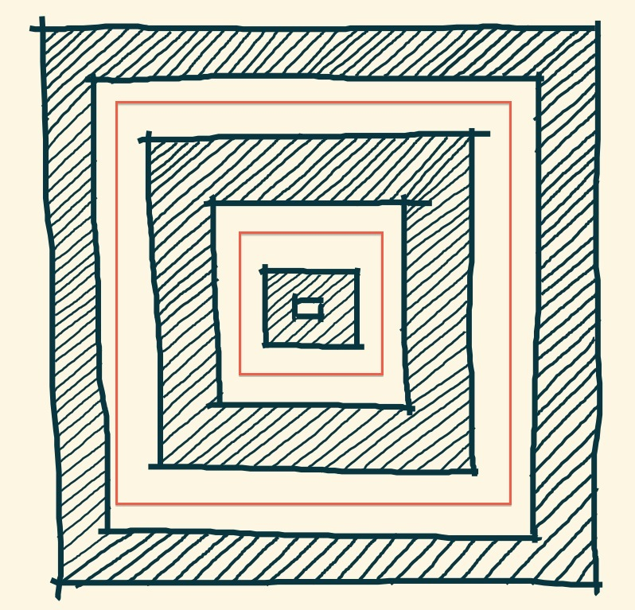
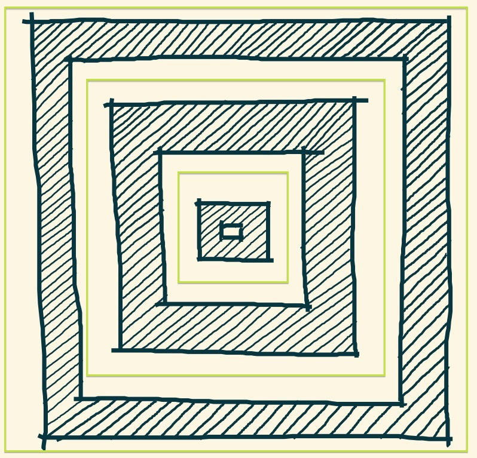
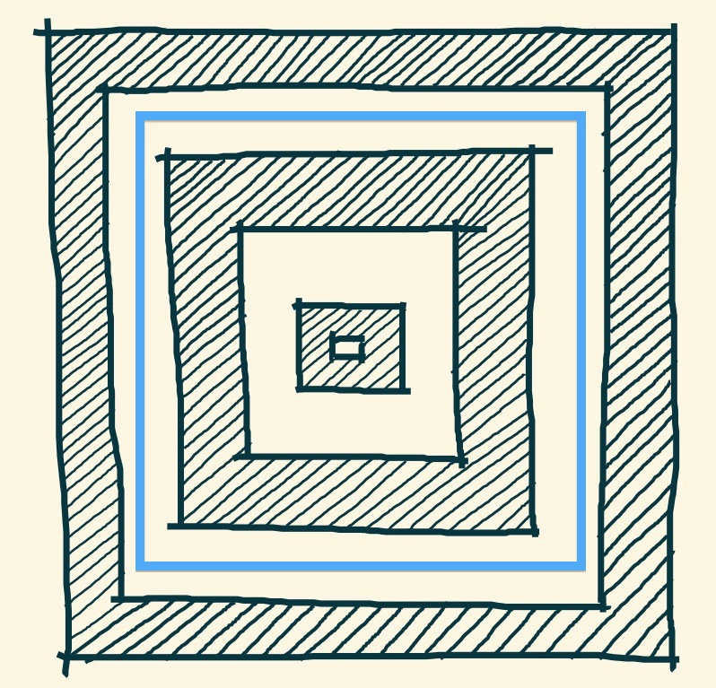
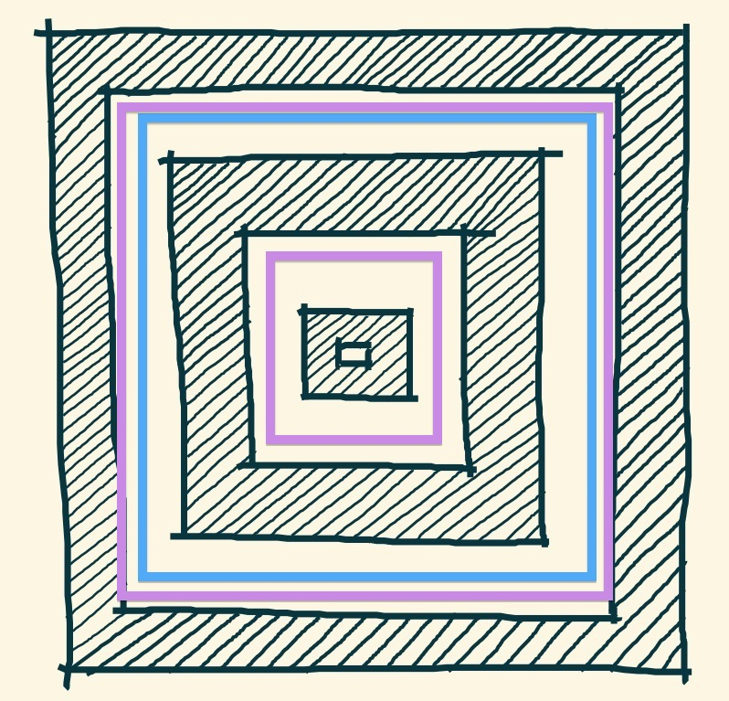

My professional work has been featured in Interior Design Magazine, AIASF Small Firms Great Projects and Green Source Magazine.
I am currently a Designer/Job Captain and run numerous side-projects on the weekends. You can read my resume here and you can find more of me at Github, Instagram, Feedly.
Say hello! contact@karenstolzenberg.com